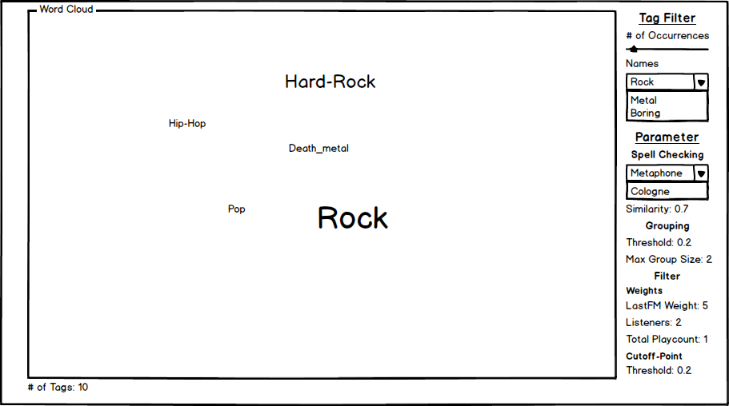
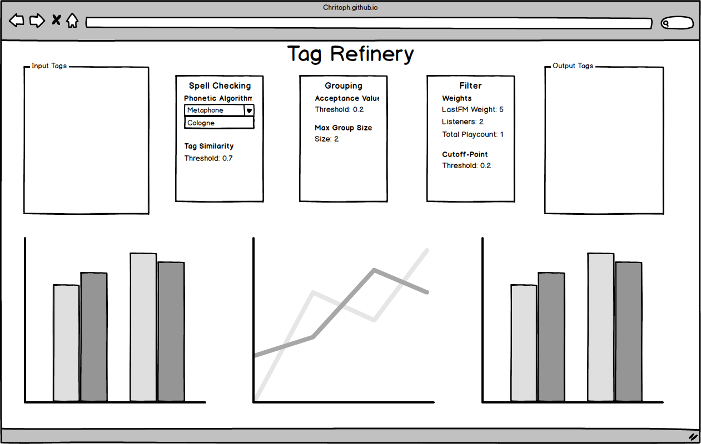
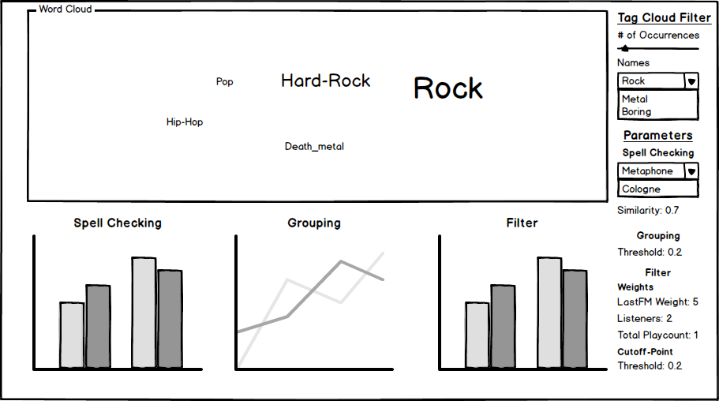
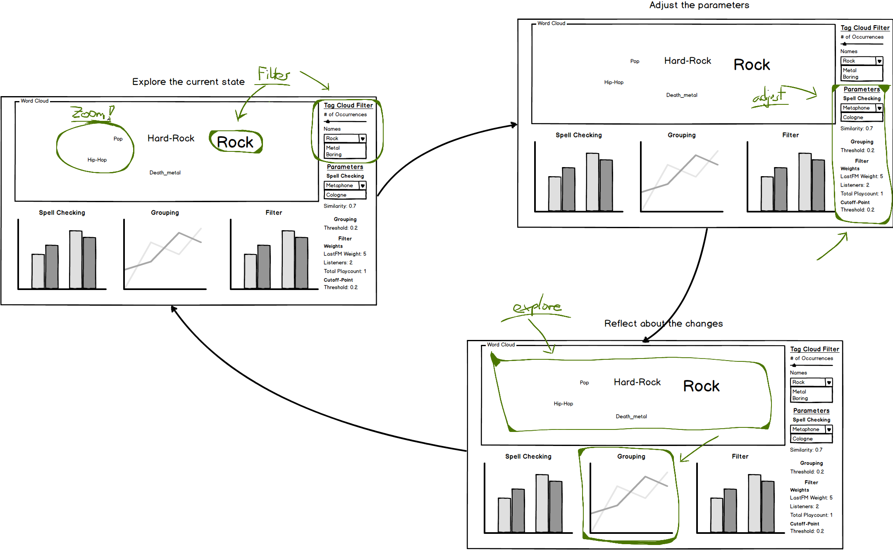

Goto Index
Proposed Solution and Mockups
Target: A visual interface which let the user easily manipulate the cleaning pipeline and gives "instant" feedback about the output.
Tasks:
- Getting an overview of the tag space (Filtering, zooming)
- Parametrize the algorithm
- Check the processed tags
- Get information for a better parameter combination
- Iterate through the last three tasks until the user is satisfied with the output
Mockup 1:

The first Mockup is an Tableau Dashboard. It uses the great data exploration capabilities Tableau provides. The data is visualized through a word cloud which seems to be a reasonable
way of giving the user feedback what the algorithm output is.
Pros: This interface provides a good overview and a simple UI.
Cons: Its not clear how the different steps of the algorithm (the parameters) affect the solution.
Mockup 2:

The second Mockup is a D3 Page. Here are more detailed graphs about how the parameters influence the data. On the top left and right
corner are text fields which are connected (The same tags are in both lists). This provides the user with detailed about how a special tag develops. Between those are the parameter controls.
At the lower border are three graphs. Each corresponds to one refining step. The left one shows as histogram the number of replacements. The 2
bin shows how many words replace two other words. The middle graph is a heatmap where the size is the connection strength between those two tags.
The right graph is related to computed weight for each tag. It shows as histogram the distribution of the weight and highlights the cutoff-point.
Pros: A lot of information about the impact of the different steps and the possibility to see how a tag develops.
Cons: The overview is not as good as in the first Mockup.
Mockup 3:

This Mockup is an crossover of the last two. It merges the two text fields of the last Mockup again into a word cloud which is in my opinion the better visualization.
Tableau provides easy ways of filtering and scaling which further improves the way the user can interact with the tag cloud. In addition are the three graphs
explained in the last Mockup. These should provide enough detailed information if needed and be ignored otherwise.
Pros: It provides an overview and details on one screen. Linking between the different graphs is possible. This may improve the insight for the user.
Cons: Again this might be a too complex interface. The user cant see how a single tag develops: "hard rock zasdj" -> "hard-rock"
I am going to use the Third Mockup.
Scenario
The most important problem is the "adjust parameters -> check output -> readjust parameters" workflow. This workflow consists of different tasks which are the following:
- Examine/Explore the output tags (tag cloud)
- Changing a parameter
- Reflect about the changes
After the initial setup (Upload of data) the user sees the interface with given default values for all parameters. From this starting point the user may start by filtering and exploring
the tag cloud to get a better intuition about the data. This can be achieved by three ways: Clicking on tags directly in the cloud (removing, highlighting). The slider in the upper right corner
let the user filter tags with a min and max number of occurrences. And finally a Dropdown filter where the user can select multiple items or reaktivate removed ones.
Now the user might change one or more parameters on the right side of the screen. After a few seconds the whole interface will be updated.
The three graphs on the lower border provide the user with further information how his parameter change has affected the different algorithm steps.
Example: The user examines the tag cloud and sees a lot of single tags which "should" be grouped. All of the groups shown in the grouping graph on the lower border of the interface seem to be ok.
With that knowledge he decides to lowers the grouping threshold. After the update the can again look at the grouping graph and the tag cloud how his changes has affected the output. From that point the
next iteration start.
Workflow:
